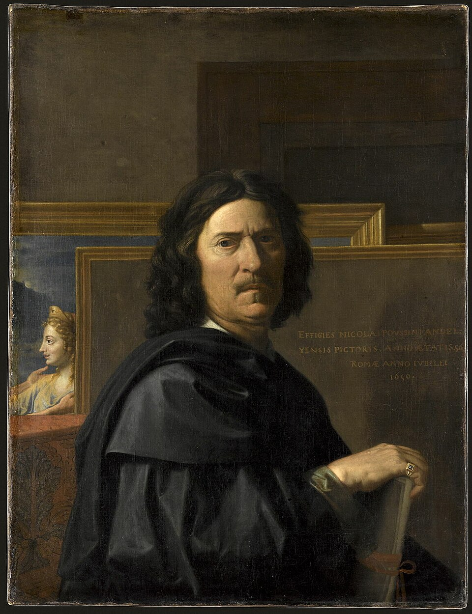

XVIe – XVIIe siècle
Grand Siècle
Qu'est-ce qu'une bonne peinture ? Explorer les premiers discours français sur la peinture et les arts au XVIIe siècle : cinq imprimés transcrits, modernisés et annotés, reliés à un index d'entités réconciliées avec Wikidata.

Nicolas Poussin, Autoportrait, 1650 — musée du Louvre (domaine public)
Le corpus
Cinq imprimés du XVIIe siècle
Transcriptions issues d'HTR, avec double couche originale / modernisée, analyse linguistique mot à mot et entités nommées détectées automatiquement puis réconciliées.
Explorer
Entrer dans le corpus autrement
Entités
Personnes, lieux, œuvres… neuf registres d'autorité issus de la détection automatique (NER) et de la réconciliation Wikidata.
Carte
Les lieux cités dans le corpus, géolocalisés sur une carte interactive.
Chronologie
Une frise des vies des personnes citées et des événements datés.
Recherche
Recherche en plein texte dans les transcriptions des cinq documents.
Démonstrateur : cette édition « Grand Siècle » est publiée avec le moteur MaX (Certic, Université de Caen Normandie), en vue d'un gel intégral en site statique.